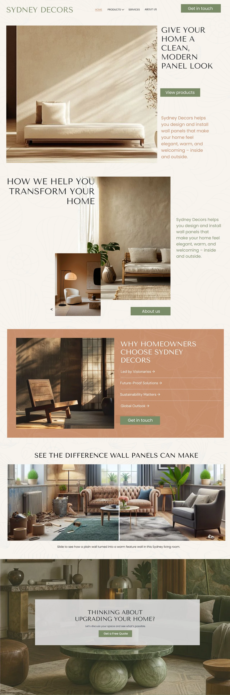
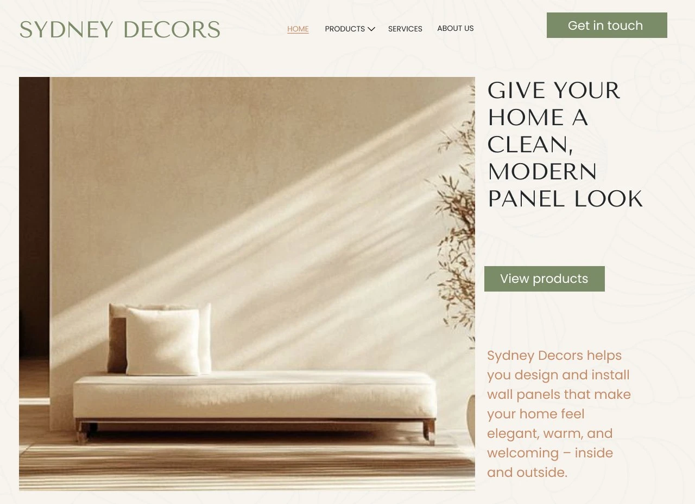
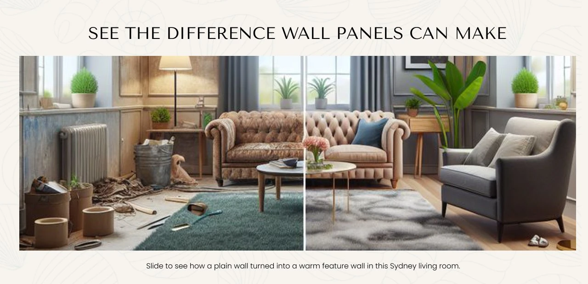
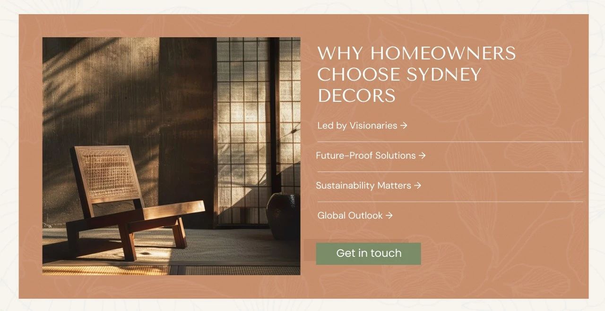
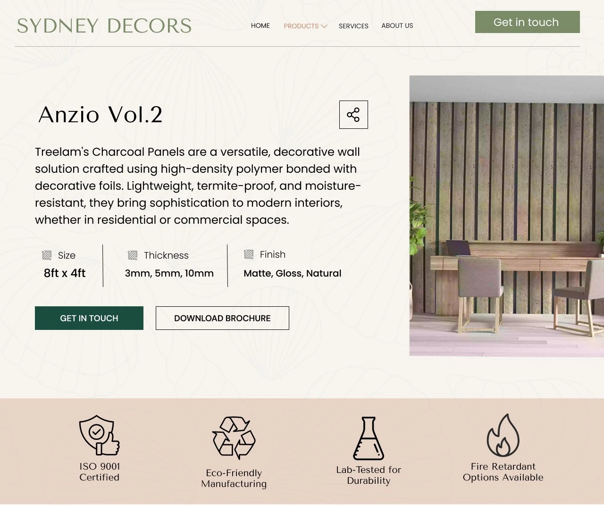
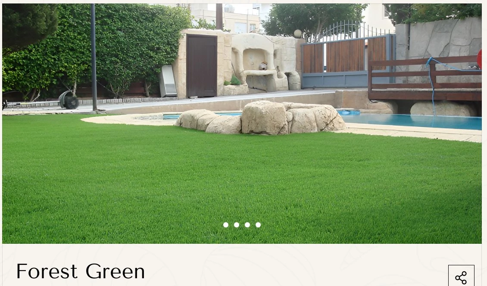
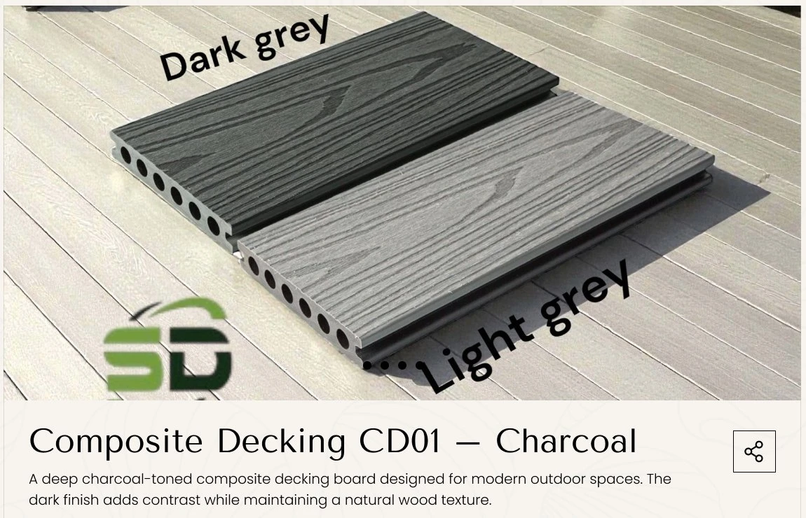
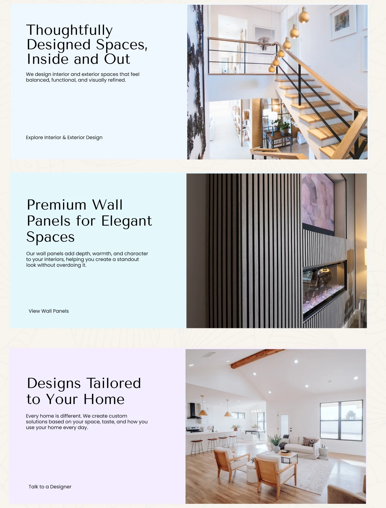
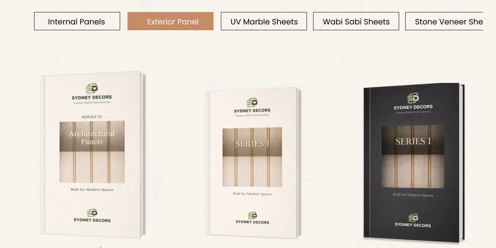
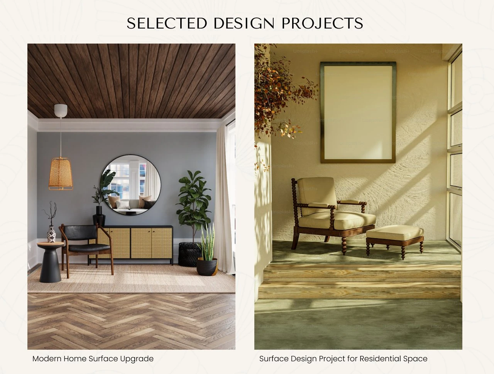

Designing a calm, editorial website for an Australian wall-panel and décor brand.

Overview
Sydney Decors supplies decorative wall panels, artificial grass, composite decking and exterior cladding, and offers interior and exterior design with installation across Sydney, Brisbane and Canberra.
As Lead UI/UX Designer at The Impact Engine, I designed the website end to end: information architecture, visual direction and nine page templates, from the homepage to product pages and the enquiry form.

Challenge
Homeowners don't buy panels. They buy how a room will feel. Most supplier sites lead with SKUs and thicknesses, which works for trade buyers and loses everyone else.
The site had to sell four product lines and a design service under one calm brand, help people picture the finished space, and give undecided visitors a next step instead of a dead end.


Approach
Lead with the room. Every page opens on a styled, daylit space with the material in context. The interface stays quiet in cream, sage and one terracotta accent, so the products carry the colour.
Specs at a glance, detail on demand. Product pages show size, thickness and finish in one row, with "Get in touch" and "Download brochure" side by side and trust badges directly below.
One system, many materials. A single product-card pattern covers grass and decking, and a recurring "Not sure which panel?" band catches buyers who are still deciding.




Outcome
The site is live at sydneydecors.com.au: nine templates covering four product lines, a design service and three cities, built on one shared set of spec rows, product cards and CTA bands.

